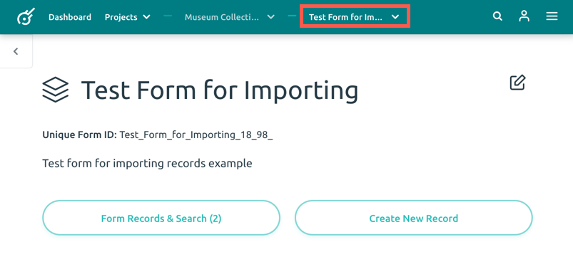
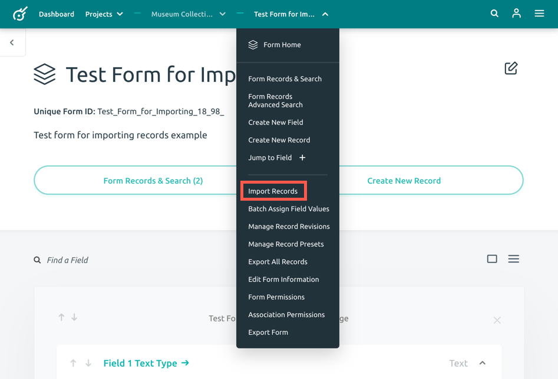
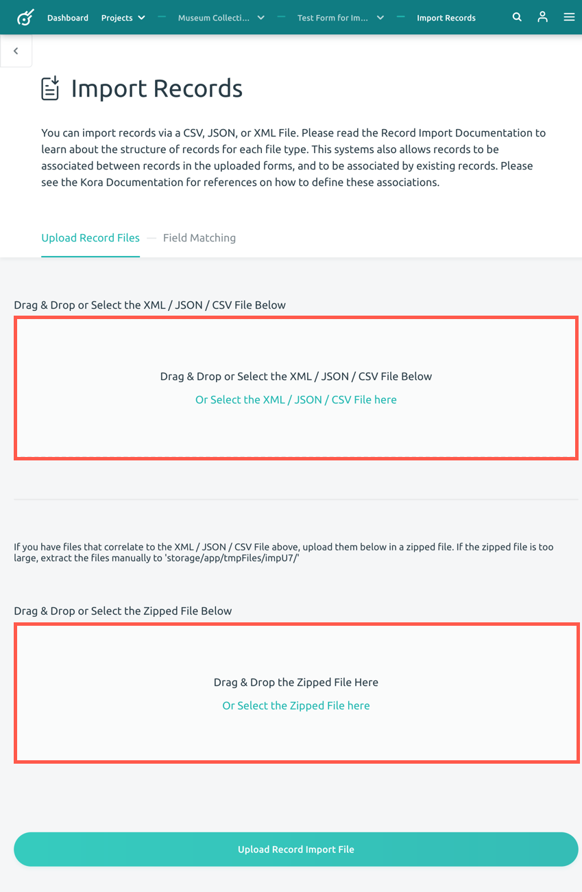
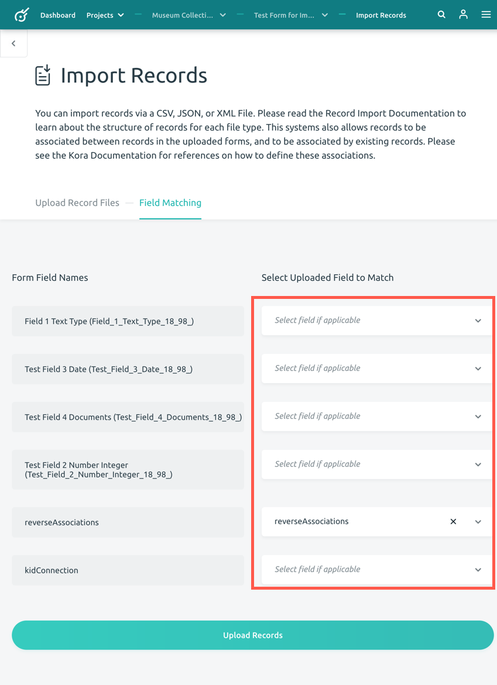
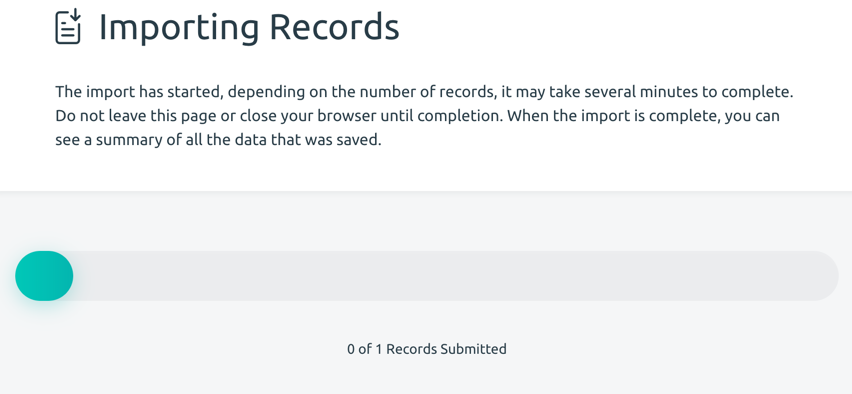
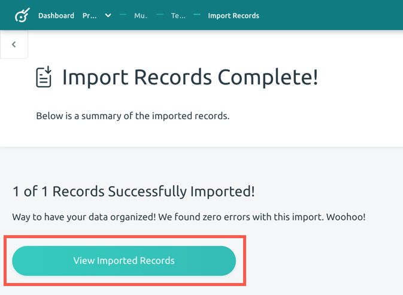
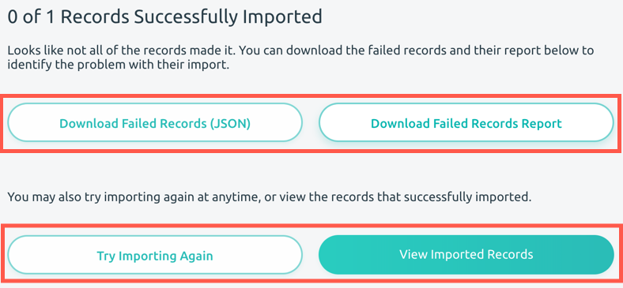

Importing a Record
A record is the metadata element. You can import a record(s) via a CSV, JSON, or XML file.
Follow the steps below to import a record(s):
-
First, open your current project (You can find the list of your projects by clicking on the Projects button on the top menu). Choose the form you would like to import a record(s) for by clicking on the form name. This will open the form page.

-
Click on the form name in the menu bar at the top of the page, this will open a dropdown menu. Choose the Import Records option in the dropdown menu. This will open the Import Records page.

-
On the Import Records page, under the Upload Record Files tab, you can either drag and drop or select the XML/JSON/CSV file you would like to import in first (top) box. If you have files in a zipped format that correlate to the XML/JSON/CSV file first (top) box, you can either drag and drop or select the zipped files in the second (bottom) box.

-
After you finish selecting your record file, click the Upload Record Import File button at the bottom of the page.
-
This will bring you to the Field Matching tab on the Import Records page. This page allows you to associate the field names between the records you are uploading to the form you are importing the records to. Select fields if applicable on the right column of the page. You will want to associate or match fields based on type. If you need information about field types, visit the Understanding Field Types guide.
Note: If a field is required in the form you are importing records into, you must associate an incoming field to one that is being imported.

-
Click the Upload Records button at the bottom of the screen.
-
A loading page will open informing you that your import has begun. Depending on the number of records you are importing, it may take several minutes to complete. Do not close the page or browser until completion. When the import is complete, you will be automatically brought to the Import Records Complete page.

-
On this page you can view how many records were successfully imported and have the option to view the imported records by clicking on the View Imported Records button.

Failed Record Import
There are several reasons a record import will fail. If a required field was not assoicated with an uploaded field (matched), you will be informed how many records out of the total were successfuly imported on the Import Records Complete page (example: 0 of 1 Records Successfully Imported).
Your record(s) will not import if you associate different field types.
Failed Records Report

You can download the failed records and their report to identify the problem with the import. The Failed Records Report will state which fields are required. If you did not match your field types correctly, the Failed Records Report may give you an error: {"18":"Unable to determine error. This is usually caused by a structure issue in your CSV\/XML\/JSON, or an unexpected bug in kora."}. If this occurs, we recommend trying to import your record(s) again after checking how the fields should be matched.
You can then try importing the record(s) again or view the successfuly imported records using the buttons on the page.
File Type Definitions:
CSV is a simple file format that is used to store tabular data, such as a database or spreadsheet. CSV stands for "comma-separated values." Files in CSV format can be imported and exported from programs that store data in tables such as Microsoft Excel, Apple Numbers, or Google Sheets.
JSON is a file type that stores data in JavaScript Object Notation format, a standard data interchange format. It is commonly used to transmit data between a web application and a server. It serves as an alternative to XML, as it easy for humans to read and write, as well as machine-readable.
XML is a file extension for an Extensible Markup Language (XML) file format. It stores data in a structure that is readable by machines and humans, as it stores data in plain text format. XML is similar to HTML.